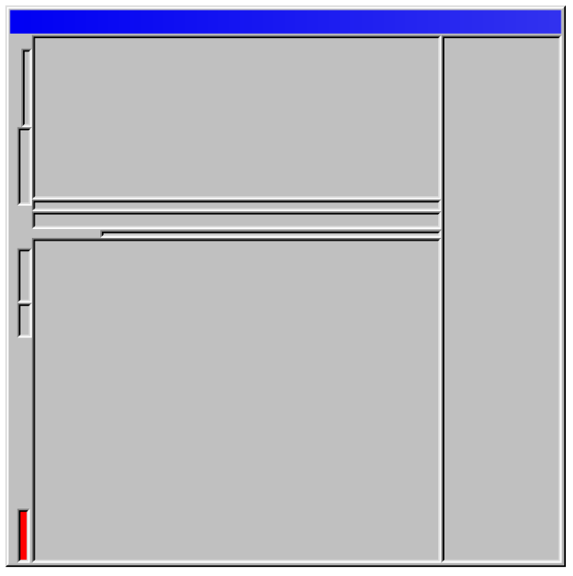

作为一名记者，我对于新闻行业的日益凋零有着很深的感触。在今天这个信息过载的时代，人们不想也不再需要为新闻付费了，曾经稳固的收益模式已经不复存在。许多新闻编辑室陆续关闭或是缩减规模，从业者的就业率在 2008 年至 2020 年间下降了 26%。深度报道正在被高效率的在线点击广告所取代。
但是，在 Web3 中，新闻不必是⼀场逐底竞争。
 图片来源：Jan Robert Leegte, Window #366, 2022. Courtesy of the artist
图片来源：Jan Robert Leegte, Window #366, 2022. Courtesy of the artist
新闻业并不是因为缺乏需求而“死亡”，只是调查和交流的形式变了。得益于 Web2 构建的大量网络基础设施，曾经难以获得的信息现在唾手可得，而且，如果你学过开源情报技术（从公开的情报源中获得信息，并进行分析整理），有时候甚至能分析出质量惊人的数据情报。那些曾经在酒馆里不为人知的对话现在在网上四处散落，记者们可以从这些信息中挖掘出各种线索和来源。而且，Web2 的基础设施激励了众多潜在的写作者，任何人都随时能在社交媒体和博客中分享他们的故事。
但是，在 Web2 巨头们对数据的集中垄断下，全球网络已经形成了数据采集、监视、控制的完整回路。这甚至决定了“谁拥有新闻”，至少从狭义上讲，谁能从新闻中赚钱，就可以说谁就拥有并控制了新闻。在纸媒时代，除了销售报纸，广告也曾是其一大收入来源，而今，大多数读者都在谷歌、推特和脸书等网站上看新闻，这些网站建构了一种涉猎广泛但浅显的阅读体验，它们聚合了各种地区和各类出版物的新闻。
在 Web2 时代，因为我们本身就是产品，所以不需要付费。
图片来源：Jan Robert Leegte, Window #77, 2022. Courtesy of the artist
原则上来说，Web3 有望改变这种权力生态。在数字广告占据超过 70% 的 Web2 世界中，Google 和 Facebook 仍然占据了中国以外全球业务的 60%。（在其余份额中）Amazon 占据了 9% ，剩下大约 30% 的份额才由传统媒体组织争夺蚕食。换句话说，美国的报纸广告收入在过去十年中暴跌了 62%。
倘若科技巨头们真正参与到新闻制作中，情况也许会更加公平，然而他们并没有为那些经过艰苦调查、使世界远离假新闻的报道提供经济支持。现今的新闻媒体有一种令人窒息的错位——前者做了大量的工作（至少是那些真正致力于新闻诚信的人），而后者却收割了大部分的利润。
目前来说，媒体机构们的联合也许是有意义的，因为它们只有联合起来才有机会与科技巨头抗衡。英国就是一个例子，有三家公司：DMG 传媒、英国新闻和 Reach，它们联合后大概能占据全国报纸和在线市场的 90%。但是，这种集团权力的集中，虽然能保障记者的工作，也随之带来了自身的新问题。除了对记者工作条件的影响外，它还威胁到新闻界的中立性及其为公众利益服务的能力。
真正的“自由”新闻是各种声音的交响乐，而不是少数人的扩音器。
图片来源：Jan Robert Leegte, Window #207, 2022. Courtesy of the artist
鉴于公众对于监管和政策干预加强的呼声日益高涨，英国计划效仿澳大利亚和加拿大，要求科技公司向新闻机构支付他们从相关报道中获取的收益。英国数字部长 Chris Philp 表示，这一新的监管举措旨在促进 “公平竞争”、“为消费者带来更低的价格、更多的选择和更多的控制权，同时支持内容创作者和出版商......”
现在大多数新闻网站都采用了硬性收费墙（ paywall，只有付费订阅后才能解锁网站内容）。然而，像 Substack 这样的平台证明了读者有意愿向作者直接付费支持，而不是给平台付费。但是，这种付费解锁作者报道和评论的需求掩盖了一个更大的问题：新的所有权经济是否真正有助于创建一个“健康”的媒体生态系统？同时， fx(text) 这样允许作者 token 化其文章的 Web3 平台更是放大了这个问题。
宾夕法尼亚大学的 Victor Pickard 认为，“这种说法的懒惰版本就是‘互联网摧毁了新闻业’。虽然有一定的道理，但新闻业的原罪在于商业化的崛起，这始于 19 世纪末。“在接受《Popula》采访时，他认为“过度依赖广告、以利润为导向的新闻系统混淆了新闻业的公共利益本质，特别是市场通常不考虑也不支持的正外部性”。这方面可供参考的例子是公共服务广播，例如英国广播公司（BBC），它通过每年的许可费获得资金。
但是，如果想将新闻作为一种公共物品，保护其不受科技资本主义霸权的影响，可能还需要创造一个独立的媒体公地——让其作为由“民主控制的公共资源”。对 Pickard 来说，解决垄断性新闻问题的一个办法是“在每个社区建立一个公共媒体中心”。
Web3 能否让媒体公地快速响应、便捷、无懈可击？
图片来源：Jan Robert Leegte, Window #59, 2022. Courtesy of the artist
Maria Bustillos 是 Popula 的创始编辑，该出版物是 The Brick House Cooperative 的一部分。Brick House 由一群记者们所设计、拥有和经营，这个出版物是基于区块链技术的出版创新，而 Bustillos 本人自 2013 年以来则一直在撰写关于区块链的文章，包括最近为纽约时报写的一篇。回忆起互联网的黎明时期，她说道：“我曾经有一些可笑的乌托邦式的想法，以麦克卢汉的视角看待互联网将能够为人们做什么。其中有一些不是虚幻的，或者说没有完全被摧毁。我们仍然有互联网档案馆。任何人只要有网络连接，都可以自由使用维基百科、维基共享资源、Flickr等巨大的知识和信息库。”
我们很容易对 Web3 产生某些乌托邦式的期望：Web3 和区块链将通过其去中心化的特质点燃公民的新闻热情，同时 NFT 将思想的所有权交还给个人。但这种新的“创造者经济”的现实是，它正在迅速成为另一种平台经济。普林斯顿大学的 Paul DiMaggio 说：“技术不会改变我们。它们只是提供了一种可能性，让我们能够真正成为自己，更容易地做我们喜欢或需要做的事情。" 现实情况是，早期互联网的规则同样适用于 Web3。
“它在多大程度上会发展成为传统娱乐媒体和政治统治工具的结合体，将取决于经济激励和构建这些激励的公共政策。”（Paul DiMaggio）
对新闻业而言，区块链技术意义重大，因为它让我们都能稳定地监控参与报道的各方，包括作家、编辑和其出版物。通过对文章的代币化（tokenization），可以将一篇文章与其作者联系起来，并通过智能合约实现该所有权的确权。例如欧盟资助的项目MediaVerse，专注于在维护知识产权的同时促进创作者之间的合作，它就依靠智能合约来配置复杂的许可协议合同。（许可协议是指双方签订的一份法律书面合同，其中产权所有者允许另一方使用他们的品牌、专利或商标。）
相比于机械地从创作者那里榨取价值的 Web2 科技巨头，Web3 从原则上重新配置和声明了创作者的权利，以及他们从创作中获得劳动补偿的权利。它还简化了创作者货币化其作品的过程，并在没有第三方参与的情况下构建自己和读者之间的微型社区。
Substack 在 web2 的发展可以说是对日渐式微的传统媒体的回应。Web3 是媒体“Substack 化”的新阶段。
图片来源：Jan Robert Leegte, Window #137, 2022. Courtesy of the artist
社交媒体平台的中心化架构会使它倾向于毫无意义的假新闻，而真实事件里的细节则被忽视，这扭曲了原本的公众新闻意义。这种逻辑会给用户打上某种隐秘的集体思维标签，使他们被各种对立和激进的情绪进一步孤立和分裂。这种情况将在 Web3 中被颠覆，因为它将被动的用户重新想象为信息的主导者和创造者，人们不再被推荐算法左右，而是自己去筛选、消化和思考。Web2 的科技巨头再也不可能像寄生虫一样，只凭借自己平台上的标题党新闻便可以躺着获利了。
即使有这样的变革趋势，倘若 Web3 真的能带来有用的信息，而不只是给我们的信息垃圾桶火上浇油的话，那么对新闻的事实核查和对监督的滥用等核心问题就需要被慎重考虑。在一个将文本都可以金融化的 Web3 世界里，很难设想新闻与商业的彻底剥离。另一方面，基于媒体公地的愿景：“通过依赖它的人的积极参与而维持的集体资源”，我们可以将其想象为一个 DAO（去中心化自治组织）。那么，能否真正在媒体公地中实现民主决策、资源分配和共享所有权呢？现在技术已经具备了实现的可能性，时间会证明这一切。
信息的透明度也是区块链的一个副产品，作为一个分布式账本，它可以起到抗审查的作用（国家当局更愿意将某些信息置于公众视野之外）。同时，在区块链上可以更长久地保存我们的数字足迹，那些曾经私密或加密的思想和行为，现在则被记录在链上供后人参考和挖掘。它还能有效防止将假新闻认证为事实这种荒谬行为，目前有一些基于区块链的平台正在做这件事。JournoDAO 就是一个例子，它的创立是为了吸引写作者加入，共同建设和监测新闻业在 Web3 中的创新。其创始成员之一 Crystal Street 是一位享誉的纪实摄影师，她曾在 Fundation 上以 NFT 的形式出售其作品。在某次 Zoom 上，她曾阐述了 JournoDAO 背后的原则。
“我们现在的一个重要任务是帮助记者理解 Web2 和 Web3 的区别，以及我们正在建设的这个去中心化的生态系统对他们的重要意义。这样他们就可以保有对工作的所有权，并在诸如企业合并等主流媒体天天大肆宣扬的事情之外，创造一些对新闻的自主权。”
图片来源：Jan Robert Leegte, Window #143, 2022. Courtesy of the artist
除此之外，Mirror 也是一个令人兴奋的项目，它是一个去中心化的博客平台，允许作者免费将文章创作为 NFT 并享受版税收益；Unlock 是一个可以提供会员身份证明、活动票务、出席证明等功能的 NFT 铸造协议；Paragraph则是一个允许创作者拥有、培养和与读者社区互动而没有中间商的新闻订阅平台；Paragraph 还采用了通证门控作为奖励代币持有者获取作家、独家内容、活动门票等特权的手段。而对于 Bustillos 来说，通证门控是“一种全新的文化联系方式”，它提供了类似付一点小费才能评论这样的功能，既能抑制网络喷子的活跃度，又可以提升社区讨论的质量。
JournoDAO 的另一位成员 Mack 说：平心而论，有 Web3 存在的世界会更好，否则我们只能眼睁睁地看着 Facebook 和其他科技巨头继续吞噬世界、摧毁新闻业，这意味着我们将进一步陷入两极分化。

翻译：Demian
审校：Henry
排版：小空
审核：suannai